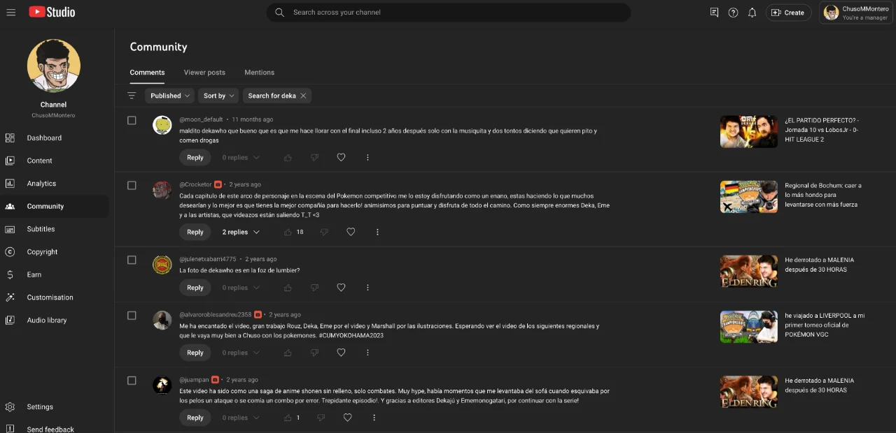
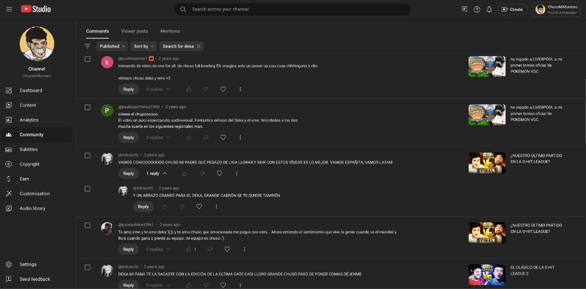
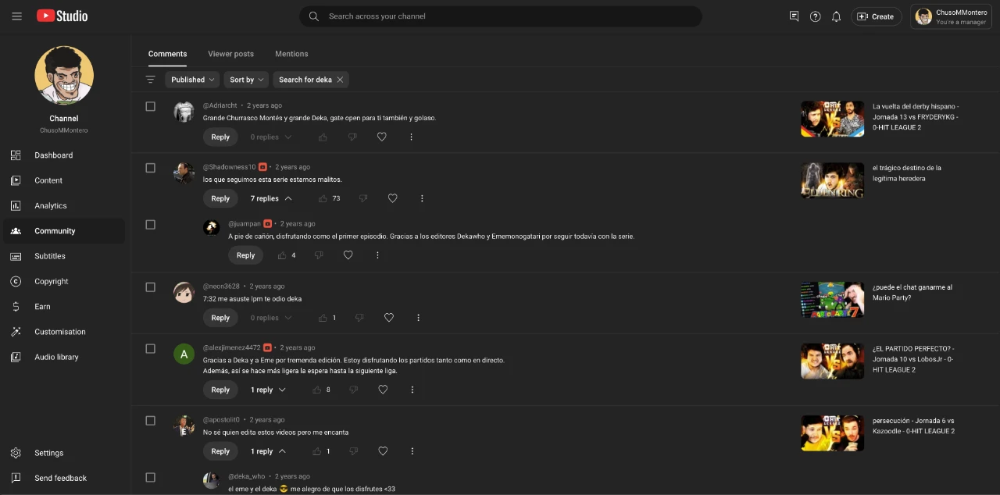
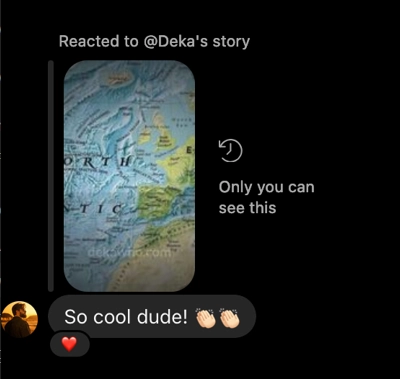
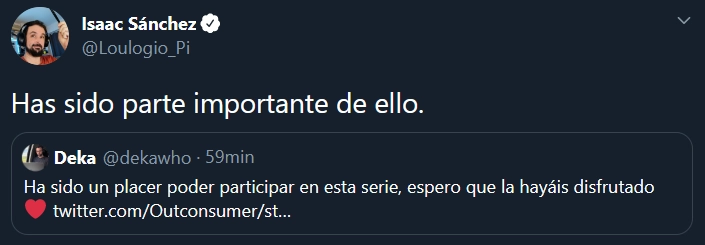
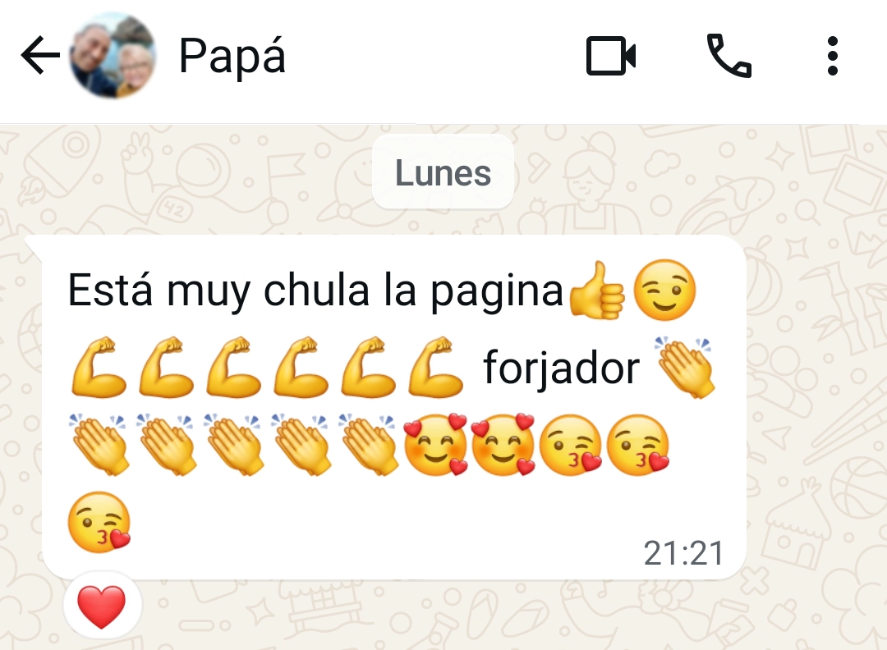

Mis 4 principios clave
Para poder trabajar conmigo tienes que conocerlos:
-
Todo empieza desde el producto. Usaré los puntos fuertes para diferenciarlo de la competencia y hacerlo ver como algo único.
-
El objetivo del marketing es generar ventas ➜ una empresa con mucha facturación puede centrarse en el largo plazo (seguir mejorando sus productos y darle mejor servicio al cliente) Todos ganamos.
-
Mi objetivo egoísta es llegar a ser el referente nº 1 del marketing directo (como Hormozi o Bencivenga pero español) En el futuro afirmaré que soy el hispano que más ingresos ha generado para sus clientes. Y para eso necesito ayudar a empresas como la tuya.
-
Soy un fiel defensor de los sistemas con comisiones: generan motivación para dar lo mejor de uno mismo (no como los pagos a 60 días)
Si sintonizas con estos principios podemos trabajar juntos para generarte clientes que (además de comprar una vez) estén decididos a levantarse del sofá, ir a por la cartera y lanzarte su dinero una y otra vez. Soy:
DAVID VAREA
Transformo tu tráfico en clientes adictos a comprarte.
No soy un creativo ni hago branding para multinacionales ➜ Soy el forjador, un herrero de las ventas recurrentes.
Desde 2019 he trabajado junto a grandes influencers. Ahí empecé a usar la fórmula americana para que los clientes vuelvan. Sin gastar más en anuncios de retargeting (ni subir vídeos si no quieres).
Y esto es lo que opinan de mi trabajo
Has escuchado a Rioboo. Es creador de contenido y cofundador de CORI, marca de café (aunque no sigas el mundo influencers igual te suena por haberlo visto con Ibai).
Antes de seguir mostrándote la infinidad de opiniones sobre mí ➜ me llamo David pero en internet me conocen como Deka (dekawho en mis redes). Seguimos:
Este es Chuso Montero. Abrimos su canal desde 0 y lo llevamos hasta 109.500 seguidores potenciando su personalidad. Aquí tienes la buena percepción que tiene su audiencia de nosotros:




Este último es Carlos Lana. Uno de los editores de Magnates Media (un canal en inglés con 185 millones de reproducciones en vídeos largos) Después de ver una de las piezas en las que yo había trabajado me escribió para felicitarme.

Es Loulogio. Igual te suena su nombre. Fue uno de los primeros españoles en viralizarse con el nacimiento de youtube. Millones de visitas cuando tener solo mil ya era un logro. Hizo vídeos míticos como «La Batamanta». En esa época no trabajábamos juntos pero años después sí lo hicimos.

Esta es la review más importante, la de mis padres.
Outconsumer: otro de los padres de youtube (empezó compartiendo espacio con WillyRex) Es alguien muy respetado por la comunidad de videojuegos y por otros creadores de renombre.
Y APRENDÍ ESTO
Después de trabajar con todos ellos vi que la receta americana  se puede aplicar en muchos tipos de negocio. Desde marcas personales, tiendas online o fitness.
se puede aplicar en muchos tipos de negocio. Desde marcas personales, tiendas online o fitness.
Pero no sirve para negocios impersonales como dropshipping, Amazon FBA o canales automatizados. Tampoco para servicios puntuales como cerrajeros o electricistas.
Para que sepas la mejor forma de implementarla en tu negocio he preparado esto:
Un test gratuito para conocer tu negocio. Cuando lo rellenes prepararé un vídeo corto con dos acciones personalizadas para ti (enfocadas en que factures más sin depender del coste de tus anuncios).
En menos de una semana te envío el vídeo sin necesidad de hacer una llamada. Si estás leyendo esto ahora mismo tengo disponibilidad (solo hago dos vídeos al mes)